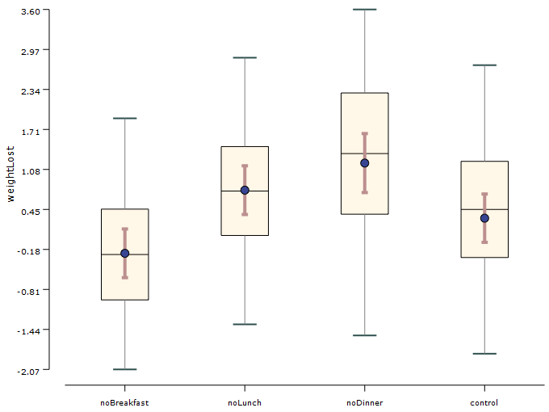
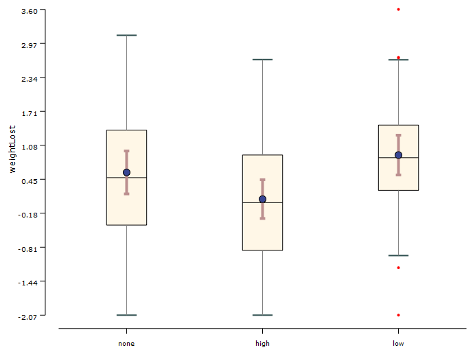

Friedman's test is used when 3 or more conditions are compared and the independent variable is a within-groups factor (same set of participants for all conditions). It is an alternative for one-way repeated-measures ANOVA. It can be used even when the distributions are not normal but requires the homogeneity of variances to be met (i.e., the distributions must have equal variances).
Conditions:
- Between-subjects experimental design
- The dependent variable is in ordinal scale (Likert scales or 5 point scale) or continuous scale
- Group consists of random sample of population
- Data do not need to be normally distributed
Examples:
Example 1: Does skipping a meal lead to weight loss? If so, does it vary for different meals? In this experiment, we compare the weight lost by participants under four different conditions: skip breakfast, skip lunch, skip dinner, and control. We measured the amount of weight lost (positive value means that weight was lost) and the absolute BMI after 3 months. The experiment follows a between-group design. Following the experiment, we also get the satisfaction rating from the participant. The amount of exercise of the participant is also considered as an independent variable. Here condition is taken as the independent variable and the corresponding weight loss is the dependent variable.

Example 2: Similarly with the same above experiment but with different independent variable selected, in this case exercise is taken as the independent variable and weight loss the dependent variable.
